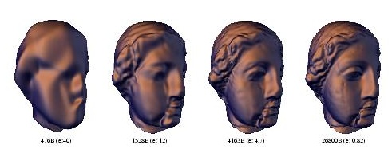

Progressive Geometry Compression
Andrei Khodakovsky
Peter Schröder
Wim Sweldens

Abstract:
We propose a new progressive compression scheme for arbitrary
topology, highly detailed and densely sampled meshes arising from
geometry scanning. We observe that meshes consist of three
distinct components: geometry, parameter, and connectivity
information. The latter two do not contribute to the reduction of
error in a compression setting. Using semi-regular meshes, parameter
and connectivity information can be virtually eliminated. Coupled
with semi-regular wavelet transforms, zerotree coding, and
subdivision based reconstruction we see improvements in error by a
factor four (12dB) compared to other progressive coding schemes.
Status:
Computer Graphics Proceedings (SIGGRAPH 2000), pp. 271-278, 2000
Dates:
|
April 2000:
|
Final version posted.
|
|
March 2000:
|
Accepted for SIGGRAPH
|
|
February 2000:
|
Posted on the Web.
|
|
January 2000:
|
Submitted.
|
High resolution (300dpi) file: PDF v3.0 (.pdf) (3.7M).
Low resolution (72dpi) file: Lowres PDF v3.0 (.pdf) (600K).
Software:
Progressive
Geometry Compression Software
Copyright © 2000 Andrei Khodakovsky, Wim Sweldens, Peter Schröder.